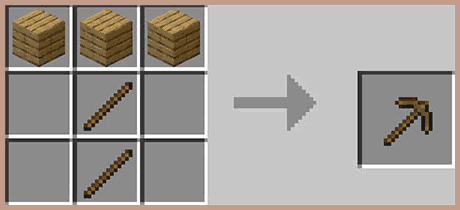
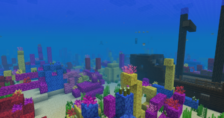

ゲームの詳細
| ジャンル |
*¹サンドボックス |
| 対応機種 |
Microsoft Windows
macOS
Android
iOS
Xbox One
PlayStation 4
Nintendo Switch
など |
| 開発元 |
Mojang Studios
Microsoft
4J Studios
SkyBox Labs
Other Ocean Interactive |
| 売上本数 |
約300,000,000（3億）本（全機種、2023年10月時点でのデータ） |
『Minecraft』（マインクラフト）は、マルクス・ペルソン（Notch）とMojang Studiosの社員が開発した*1サンドボックスビデオゲームである。日本国内では「マイクラ」と略される。
2009年にパブリックアルファ版をリリースし、2011年11月に正式リリースが行われた。そのころにイェンス・バーゲンステンが開発を引き継ぎ、以降、さまざまな*2プラットフォームに移植されている。
2014年には、当時の販売本数が6000万本となったことで「世界で最も売れた*3インディーゲーム」としてギネス世界記録に認定され、2023年10月時点では売り上げが3億本を突破している。また、2020年には世界ビデオゲームの殿堂に選ばれている。
＊1サンドボックス……プレイヤーにゲームを進める手順や移動経路、課題などを提示せず、用意された舞台で自由に何をしてもいいスタイルのゲームのこと。
＊2プラットフォーム……ある機器やソフトウェアを動作させるのに必要な、基盤となる動作環境のこと。
＊３インディーゲーム……インディペンデント・ゲーム（independent game, 独立系ゲーム）の略称で、主に少人数・低予算で開発されたゲームソフトのこと。
実際の教育的効果
１.創造性を養える
このゲームの世界はすべて同じ大きさの様々なブロックで構成されており、それらを用いて様々な建築物やオブジェクトをつくることができます。
また、TwitterやYoutube等にもたくさん創作物の投稿がされている（制作過程の説明がある場合も…！）ので、工夫次第で誰でもイメージに沿ったものをつくることができます。
そうして誰でも簡単に作れるので、創造力を培うには適しているのではないのでしょうか。
２.計画性、計算力が身につく
このゲームでできることの１つ「クラフト」では、1種類の資源からでも以下のように多くのアイテムを製造できます。
e.g.）原木（×１）→板材（×４）→棒（×８）
鉄の原石（×１）→鉄インゴット（×１）
棒（×２）＋鉄インゴット（×３）→鉄のツルハシ（×１）
また、既にお気づきだと思いますが各アイテム１つから作れるアイテムは１つとは限りません。
そのため自分の目的に応じた資材管理が必要になり、その結果として計画性、ひいては計算力にまで磨きがかかってくるといえましょう。
原木→板材の過程。
板材は更に加工せずとも建材や燃料としても使える、汎用性の高いブロック。

棒＋鉄インゴット→鉄のツルハシを含む過程。
このように各種道具や防具等は、様々な素材から作成可能。
また、鉄インゴットも汎用性が高いアイテムの一つである。
３.工学理論が学べる
マインクラフトでは他にも、「レッドストーン」というものを用いて高性能な計算機やエレベーター、演奏回路等の様々な装置をつくることができます。
これらの作成のためには回路の知識やその理解が必要不可欠です。
またゲーム上での作業なので電子回路の製作がなかなか厳しい方でも簡単に着手することができ、非常に有用なテクノロジーの学習教材といえます。
４.生態系を理解できる
このゲームの世界は「バイオーム」と呼ばれる、気候や地形等によって区別されたエリアが設定されています。
その大半が現実に存在するものと類似したもので構成されています。
しかもそこではそれぞれ異なる生態系が確立されており、もちろん現実にいる生き物も多く生息しています。
そのため地理や生物の学習にも繋がり、様々な生態系をより身近に感じ取ることができるといえるのではないでしょうか。
ジャングル（Jungle）バイオーム。熱帯雨林風の樹林。
地面が覆い尽くされるほど大量の草や木の葉がある。
樹木の密度がとても高く、非常に見通しが悪い。
ツタが木の幹、壁面や洞窟内部に生えている。

暖かい海（Warm Ocean）バイオーム。
エメラルドグリーンの水の熱い海。
深度は浅くサンゴ礁が生成され、様々な熱帯魚が生息する。